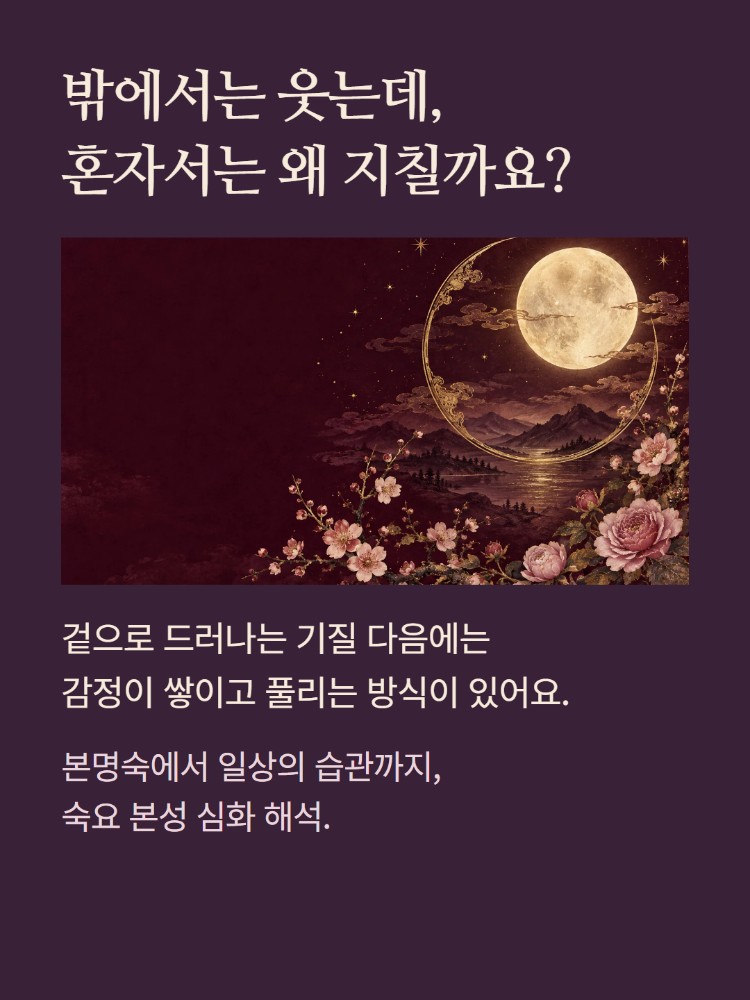
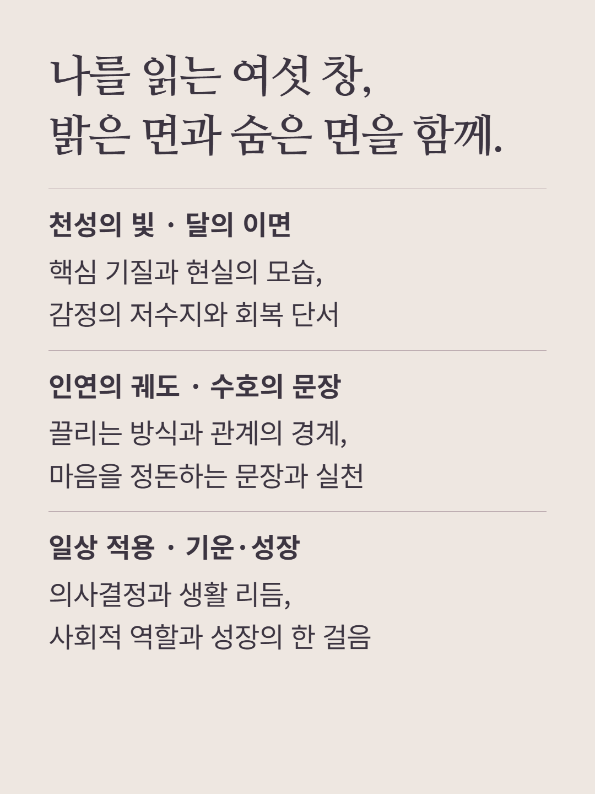
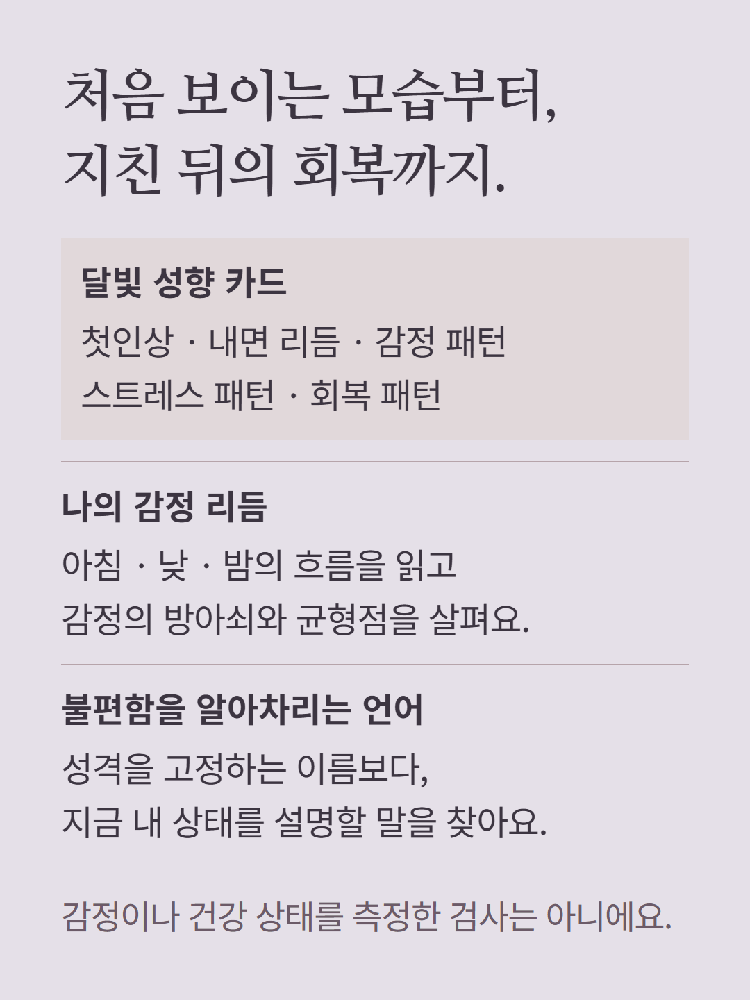
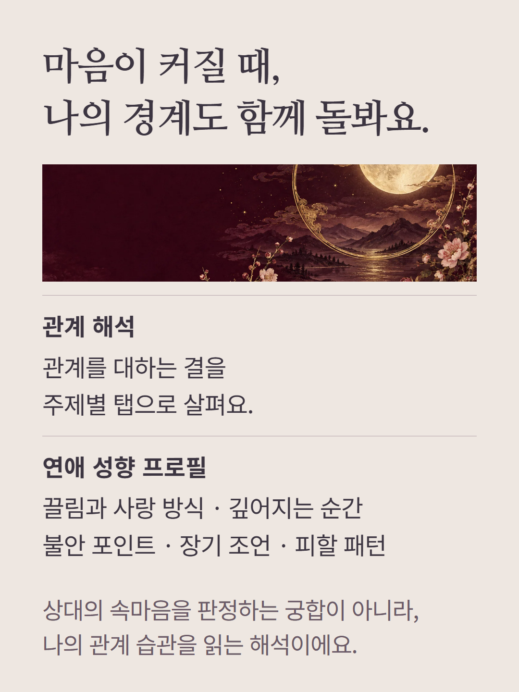
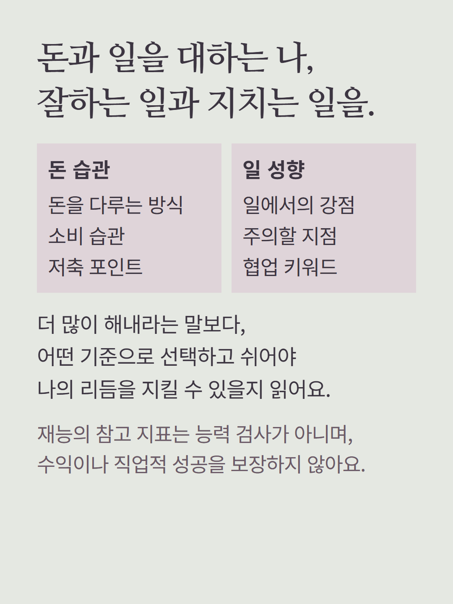
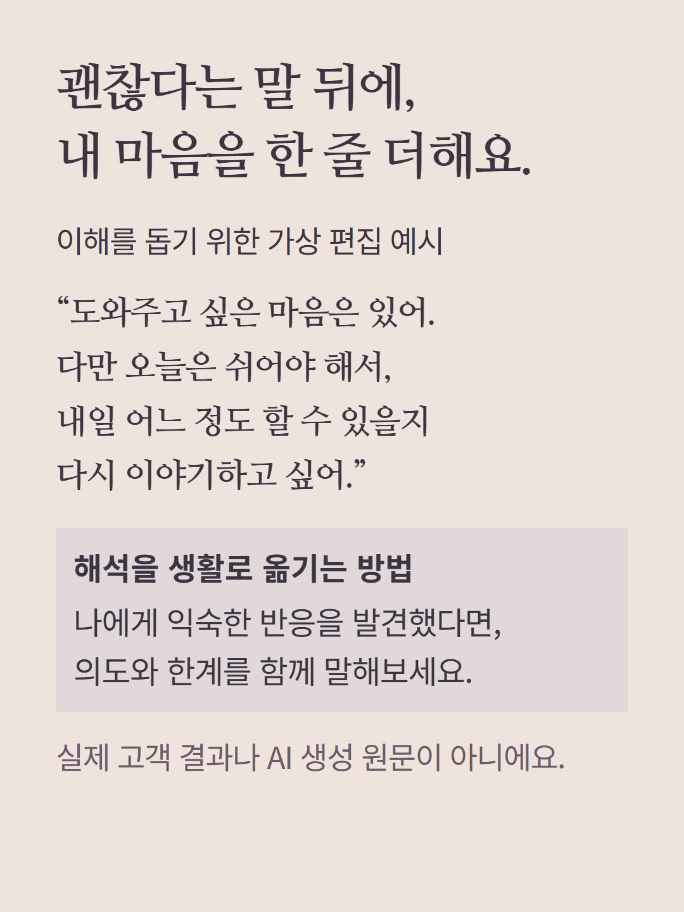
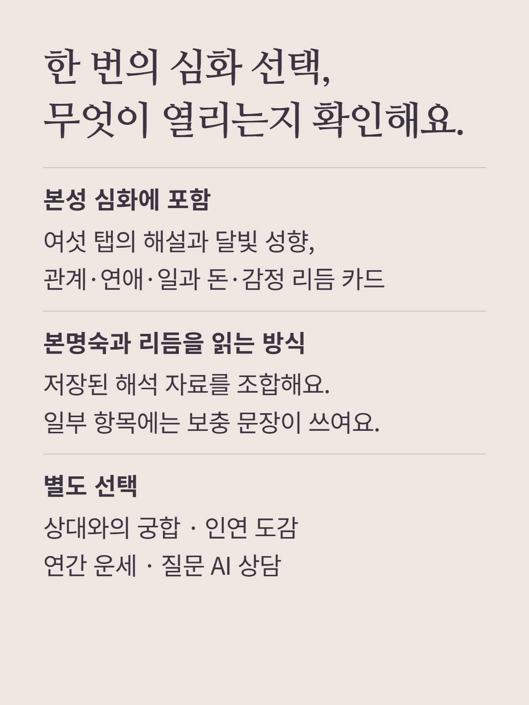
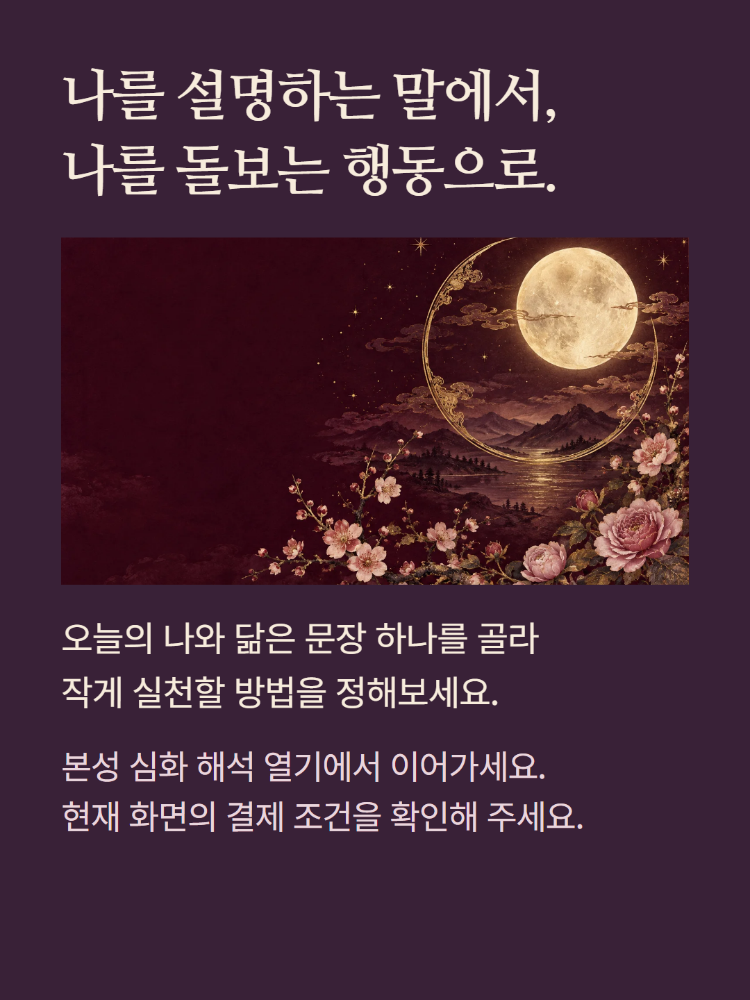

기본 숙요의 본명숙·기질과 해석 데이터를 바탕으로 여는 본성 심화입니다. 천성의 빛·달의 이면·인연의 궤도·수호의 문장·일상 적용·기운과 성장의 6개 탭, 달빛 성향 카드, 관계 해석, 연애 성향, 돈 습관과 일 성향, 감정 리듬을 제공합니다. 본명숙별 문구와 달의 리듬 자료를 조합하는 로컬 해석이며 AI 질문 상담이나 상대의 출생정보를 넣는 궁합은 포함하지 않습니다. 자료에 따라 보충 설명과 기본 문장이 사용될 수 있습니다. 기운·회복 안내는 자기 돌봄을 위한 참고이며 의학적 진단이나 치료가 아닙니다. 금전·관계의 결과를 보장하지 않으며 예시는 가상 편집입니다. 인연 도감·궁합·연간 운세·AI 상담은 별도 상품이고, 가격과 결제 조건은 현재 화면을 따릅니다.